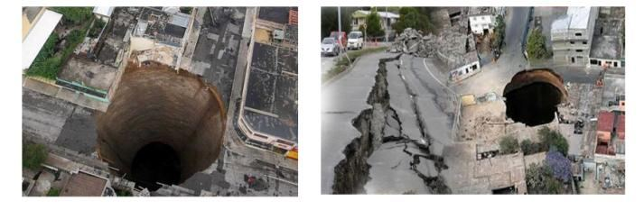
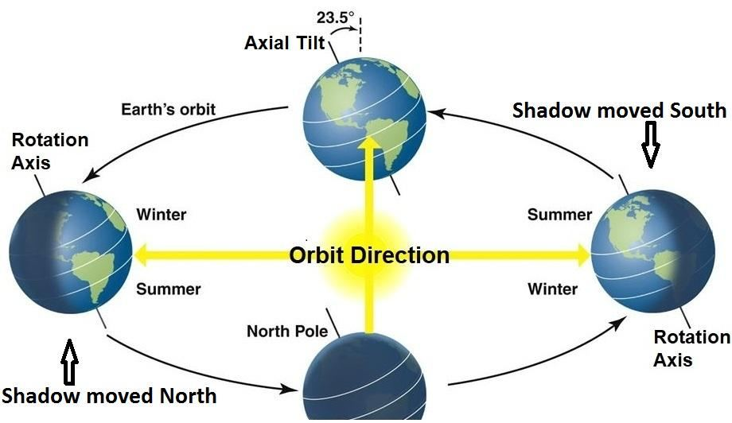

To those who leave their homes in the cause of God after suffering oppression, We will assuredly give a goodly home in this world, but truly the reward of the hereafter will be greater—if they only realized—those who persevere in patience and put their trust on their Lord. And before you also the apostles We sent were but men, to whom We granted inspiration. If you realize this not, ask of those who possess the message with clear verses and songs (psalms). And We have sent down to you the Remembrance (Dhikra) that you may describe to mankind what is sent down to them, and that they may think.
যারা নিপীড়ন সহ্য করে আল্লাহর পথে গৃহ ত্যাগ করে, তাদেরকে অবশ্যই এই পৃথিবীতে একটি সুন্দর ঘর দেব, কিন্তু সত্যিকার অর্থেই পরকালের পুরস্কার অনেক বেশি হবে- যদি তারা বুঝতে পারে- যারা ধৈর্য ধরে এবং তাদের পালনকর্তার উপর ভরসা করে। আর আপনার পূর্বে আমি যে সমস্ত রসূল প্রেরণ করেছি, তারা কেবল পুরুষই ছিল, যাদের প্রতি আমরা ওহী দান করেছি। যদি আপনি এটি উপলব্ধি না করেন তবে তাদের জিজ্ঞাসা করুন যারা স্পষ্ট আয়াত এবং গান (গীত) সহ বার্তার অধিকারী। আর আমি আপনার প্রতি যিকর (জিকর) অবতীর্ণ করেছি যাতে আপনি মানুষের জন্য তাদের কাছে যা অবতীর্ণ হয়েছে তা বর্ণনা করতে পারেন এবং যাতে তারা চিন্তা করে।
The sequence in which the verses were revealed differed from their arrangement in the Quran. Additionally, the verses were sent as ruhs—data composed of electromagnetic force fields, meant to be imprinted in the brain of Prophet Muhammad (pbuh). This concept is deliberately discussed in Section-1 of Chapter 16. Thus, the Prophet (pbuh) was given a database in his brain, allowing the revealed verses to be recorded in the proper sequence. Do then those who devise evil feel secure that God will not cause the earth to swallow them up, or that the Wrath will not seize them from directions they little perceive, or that He may not call them to account in the midst of their goings to and fro so that there is no escape for them, or that He may not call them to account by a process of slow wastage for your Lord is indeed full of kindness and mercy.
আয়াতগুলো যে ক্রমানুসারে অবতীর্ণ হয়েছিল তা কুরআনে তাদের বিন্যাস থেকে ভিন্ন ছিল। অতিরিক্তভাবে, আয়াতগুলিকে রূহ হিসাবে পাঠানো হয়েছিল - ইলেক্ট্রোম্যাগনেটিক বল ক্ষেত্রগুলির সমন্বয়ে গঠিত ডেটা, যার অর্থ হযরত মুহাম্মদ (সাঃ) এর মস্তিষ্কে অঙ্কিত করা হয়েছিল। এই ধারণাটি 16 অধ্যায়ের অধ্যায়-1-এ ইচ্ছাকৃতভাবে আলোচনা করা হয়েছে। এভাবে, নবী (সা.)-কে তার মস্তিষ্কে একটি ডাটাবেস দেওয়া হয়েছিল, যাতে নাযিলকৃত আয়াতগুলো যথাযথ ক্রমানুসারে লিপিবদ্ধ করা যায়। অতঃপর যারা মন্দ পরিকল্পনা করে তারা কি নিরাপদ বোধ করে যে, আল্লাহ তাদের পৃথিবীকে গ্রাস করবেন না, অথবা ক্রোধ তাদের সেই দিক থেকে পাকড়াও করবেন না যে দিক থেকে তারা খুব কমই জানেন, অথবা তিনি তাদের এদিক-ওদিক চলাফেরার মধ্যে তাদের হিসাব নিতে না পারেন যাতে তাদের জন্য কোন নিষ্কৃতি নেই, অথবা তিনি তাদের জন্য হিসাব গ্রহণ করবেন না যে আপনার প্রভুর জন্য ধীর ও পূর্ণ দয়ার অপচয়।
Earth swallowing:
পৃথিবী গিলে ফেলা:
FIGURE 16.4: Sinkhole

চিত্র 16_4 / Figure 16_4
চিত্র 16.4: সিঙ্কহোল
চিত্র 16_4 / Figure 16_4
Have not they seen what Allah has created, from a thing inclining their shadows to the right and to the left; prostrating to Allah while they humble? And to Allah prostrate all that is in the Skies and on Lands, whether moving creatures, or the angels; for none are arrogant. They all revere their Lord, high above them, and they do all that they are commanded.
তারা কি দেখেনি যে আল্লাহ যা সৃষ্টি করেছেন, তাদের ছায়া ডানে ও বাম দিকে ঝুঁকে আছে। আল্লাহকে সেজদা করে যখন তারা বিনয়ী হয়? আর আল্লাহকে সেজদা করে যা কিছু আছে আকাশে ও যমীনে, চলমান প্রাণী হোক বা ফেরেশতারা। কারণ কেউই অহংকারী নয়। তারা সকলেই তাদের পালনকর্তাকে সম্মান করে, তাদের উপরে, এবং তারা যা আদেশ করা হয় তা তারা করে।
The Quran never directly mentions the movement of the Earth, as the people of that time were unaware of it. The shadows shift to the right and left seasonally because the Earth orbits the Sun with its axial tilt. Here, the Quran indirectly refers to the Earth's revolution and connects it to His command over nature. I have discussed in Chapter-1 that the gravitational force is a force of Allah. It is one of His extended elementary souls (ruhs) operating through the hand of His nafs. Allah holds the Earth through the Sun, and the Sun through the super-massive black hole at the center of the Milky Way galaxy. In this way, the Earth is prostrating itself before God.
কুরআন সরাসরি পৃথিবীর গতিবিধির উল্লেখ করেনি, কারণ তখনকার লোকেরা এটি সম্পর্কে অবগত ছিল না। ছায়াগুলি ঋতু অনুসারে ডান এবং বামে স্থানান্তরিত হয় কারণ পৃথিবী তার অক্ষীয় কাত দিয়ে সূর্যকে প্রদক্ষিণ করে। এখানে, কুরআন পরোক্ষভাবে পৃথিবীর বিপ্লবকে নির্দেশ করে এবং এটিকে প্রকৃতির উপর তাঁর আদেশের সাথে সংযুক্ত করে। আমি অধ্যায়-১ এ আলোচনা করেছি যে, মহাকর্ষ বল আল্লাহর একটি শক্তি। এটি তাঁর নফসের হাতের মাধ্যমে পরিচালিত তাঁর বর্ধিত প্রাথমিক আত্মার (রুহস) একটি। আল্লাহ পৃথিবীকে সূর্যের মাধ্যমে এবং সূর্যকে আকাশগঙ্গা গ্যালাক্সির কেন্দ্রে সুপার-ম্যাসিভ ব্ল্যাক হোলের মাধ্যমে ধারণ করেন। এভাবে পৃথিবী ভগবানকে সেজদা করছে।
FIGURE 16.5: Axial Tilt

চিত্র 16_5 / Figure 16_5
চিত্র 16.5: অক্ষীয় কাত
চিত্র 16_5 / Figure 16_5
Astral objects move through space without any external force applied. Thus, they prostrate themselves before God, as the verses state: ―…And to Allah prostrate all that is in the Skies and on Lands…‖ Every object is conscious. The universe is designed by Allah with the nature of each object in mind. The arrogant are subjected to coercive force. Allah grants ease to the obedient and imposes commanding force on the disobedient. There is one God who governs both the good and the bad, ensuring the order of the universe. Therefore, rid the mind of arrogance through knowledge and self-reflection, and humble yourself by prostrating before Him.
অ্যাস্ট্রাল অবজেক্টগুলি কোনও বাহ্যিক শক্তি প্রয়োগ ছাড়াই স্থানের মধ্য দিয়ে চলে। এইভাবে, তারা ঈশ্বরের সামনে সিজদা করে, যেমন আয়াতে বলা হয়েছে: ''...আসমান ও জমিনে যা আছে সবই আল্লাহকে সেজদা কর...'' প্রতিটি বস্তুই সচেতন। প্রতিটি বস্তুর প্রকৃতির কথা মাথায় রেখেই মহাবিশ্ব সৃষ্টি করেছেন আল্লাহ। অহংকারীরা জবরদস্তির শিকার হয়। আল্লাহ আনুগত্যকারীদের সহজ করে দেন এবং অবাধ্যদের উপর আদেশ শক্তি চাপিয়ে দেন। এক ঈশ্বর আছেন যিনি ভাল এবং মন্দ উভয়কেই পরিচালনা করেন, মহাবিশ্বের শৃঙ্খলা নিশ্চিত করেন। তাই জ্ঞান ও আত্মচিন্তার মাধ্যমে মনকে অহংকার থেকে মুক্ত করুন এবং তাঁর সামনে সেজদা করে নিজেকে বিনীত করুন।
God has said: ―Take not two gods; for He is just One God‖: Then fear Me. To Him belongs whatever is in the Skies and on Lands, and to Him is duty due always—then is it other than God you defend?
ঈশ্বর বলেছেন: “দুই উপাস্য গ্রহণ করো না; কারণ তিনি একমাত্র ঈশ্বর”: তাহলে আমাকে ভয় কর। নভোমন্ডলে ও যমীনে যা কিছু আছে সব তাঁরই, আর তাঁরই কর্তব্য সর্বদা কর্তব্য-তাহলে আল্লাহ ছাড়া আর কি তোমরা রক্ষা কর?
The concept of two gods originated in Persia. In Zoroastrianism, good and evil are attributed to different sources. The Evil God seeks to destroy, while the Creator God (Ahura Mazda) strives to sustain. As a result, people tended to fear the Evil God and love the Creator God. The above verses emphasize that there is only one God, who must be loved and feared.
দুই দেবতার ধারণার উৎপত্তি পারস্যে। জরথুষ্ট্রবাদে, ভাল এবং মন্দ বিভিন্ন উত্সের জন্য দায়ী করা হয়। শয়তান ঈশ্বর ধ্বংস করতে চান, যখন সৃষ্টিকর্তা ঈশ্বর (আহুরা মাজদা) টিকিয়ে রাখার চেষ্টা করেন। ফলস্বরূপ, মানুষ মন্দ ঈশ্বরকে ভয় করে এবং সৃষ্টিকর্তা ঈশ্বরকে ভালবাসে। উপরের আয়াতগুলো জোর দেয় যে একমাত্র ঈশ্বর আছেন, যাকে অবশ্যই ভালবাসতে হবে এবং ভয় করতে হবে।
And you have no good thing but is from God, and moreover when you are touched by distress, unto Him you cry with groans. Yet, when He removes the distress from you, behold, some of you turn to other gods to join with their Lord to show their ingratitude for the favors we have bestowed on them. Then enjoy, but soon will you know! And they assign to things they do not know a portion out of that which We have bestowed for their sustenance! By God! You shall certainly be called to account for your false inventions. And they assign daughters for God—Glory be to Him— and for themselves they desire (son)! When news is brought to one of them of a female (child), his face darkens, and he is filled with inward grief; with shame does he hide himself from his people, because of the bad news he has had—shall he retain it on contempt, or bury it in the dust? Ah! What an evil they decide on? To those who believe not in the hereafter applies the similitude of evil. To God applies the highest similitude; for He is the Exalted in Power, Full of Wisdom. If God were to punish men for their wrongdoing, He would not leave on the (earth) a single living creature, but He gives them respite for a stated term. When their term expires, they would not be able to delay for a single hour, just as they would not be able to anticipate it. They attribute to God what they hate, and their tongues assert the falsehood that all good things are for themselves. Without doubt, for them is the Fire, and they will be the first to be hastened on into it! By God, We sent to peoples before you, but Satan made their own acts seem alluring. He is also their patron today, and they shall have a most grievous penalty. And not We sent down the Book to you except that you may explain clearly to them those things in which they differ, and that it should be a guide and a mercy to those who believe. Section 8 of Chapter 16 [Verse 65-69]: Three basic drinks– Milk, Fruit Juice, and Honey
এবং আপনার কাছে কোন ভাল জিনিস নেই যা ঈশ্বরের কাছ থেকে এসেছে, এবং অধিকন্তু যখন আপনি কষ্টের দ্বারা স্পর্শ করেন, তখন আপনি তাঁর কাছে আর্তনাদ করেন। তারপরও, যখন তিনি তোমাদের থেকে কষ্ট দূর করেন, তখন দেখ, তোমাদের মধ্যে কেউ কেউ তাদের পালনকর্তার সাথে শরীক হওয়ার জন্য অন্য উপাস্যদের দিকে ঝুঁকছে, যাতে আমরা তাদের প্রতি যে অনুগ্রহ দিয়েছি তার জন্য তাদের অকৃতজ্ঞতা প্রকাশ করতে। তাহলে উপভোগ করুন, তবে শীঘ্রই আপনি জানতে পারবেন! আর আমি তাদের রিযিকের জন্য যা দিয়েছি তার থেকে তারা যা জানে না তার একটি অংশ নির্ধারণ করে। আল্লাহর কসম! আপনার মিথ্যা উদ্ভাবনের জন্য আপনাকে অবশ্যই জবাবদিহি করতে হবে। এবং তারা ঈশ্বরের জন্য কন্যা বরাদ্দ করে-তাঁকে মহিমান্বিত করুন- এবং তারা নিজেদের জন্য (পুত্র) কামনা করে! যখন তাদের একজনের কাছে কন্যা সন্তানের খবর আসে, তখন তার মুখ কালো হয়ে যায় এবং সে মনের দুঃখে ভরে যায়। সে কি লজ্জায় তার লোকদের কাছ থেকে নিজেকে লুকিয়ে রাখে, তার কাছে খারাপ সংবাদের কারণে - সে কি তা অবজ্ঞার সাথে ধরে রাখবে, নাকি ধুলোয় কবর দেবে? আহ! তারা কি একটি মন্দ সিদ্ধান্ত? যারা পরকালে বিশ্বাস করে না তাদের জন্য মন্দের উপমা প্রযোজ্য। ঈশ্বরের জন্য সর্বোচ্চ উপমা প্রযোজ্য; কারণ তিনি পরাক্রমশালী, প্রজ্ঞাপূর্ণ। যদি আল্লাহ মানুষকে তাদের অন্যায়ের জন্য শাস্তি দিতেন, তবে তিনি (পৃথিবীতে) একটি জীবন্ত প্রাণীও ছেড়ে দিতেন না, তবে তিনি তাদের একটি নির্দিষ্ট সময়ের জন্য অবকাশ দেন। যখন তাদের মেয়াদ শেষ হবে, তারা এক ঘন্টার জন্যও দেরি করতে পারবে না, ঠিক যেমন তারা এটি অনুমান করতে সক্ষম হবে না। তারা যা ঘৃণা করে তা ঈশ্বরের কাছে আরোপ করে এবং তাদের জিহ্বা মিথ্যা বলে যে সমস্ত ভাল জিনিস তাদের নিজেদের জন্য। নিঃসন্দেহে, তাদের জন্য রয়েছে আগুন, এবং তারাই হবে সর্বপ্রথম যারা তাতে দ্রুত প্রবেশ করবে। খোদার কসম, আমি তোমার পূর্বে অনেক লোককে পাঠিয়েছিলাম, কিন্তু শয়তান তাদের নিজেদের কাজগুলোকে লোভনীয় করে তুলেছিল। তিনি আজ তাদের পৃষ্ঠপোষক, এবং তাদের জন্য সবচেয়ে কঠিন শাস্তি হবে। আর আমরা আপনার প্রতি কিতাব নাযিল করিনি, তবে আপনি তাদের কাছে স্পষ্টভাবে ব্যাখ্যা করতে পারেন যে বিষয়ে তারা মতানৈক্য করে এবং এটি বিশ্বাসীদের জন্য পথপ্রদর্শক ও রহমত। 16 অধ্যায়ের 8 ধারা [65-69 শ্লোক]: তিনটি মৌলিক পানীয়- দুধ, ফলের রস এবং মধু
And God sends down rain from the skies and gives therewith life to the earth after its death; verily in this is a sign for those who listen. And verily in cattle will you find an instructive sign. We give you drink from what is in their bodies—from amid excretion and blood—milk pure and agreeable to the drinkers.
আর আল্লাহ আকাশ থেকে বৃষ্টি বর্ষণ করেন এবং তা দিয়ে যমীনকে তার মৃত্যুর পর জীবন দান করেন। যারা শোনে তাদের জন্য এতে নিদর্শন রয়েছে। আর অবশ্যই চতুষ্পদ জন্তুদের মধ্যে আপনি একটি শিক্ষণীয় নিদর্শন পাবেন। তাদের দেহে যা আছে তা থেকে আমরা আপনাকে পান করি - মলত্যাগ ও রক্তের মধ্যে থেকে - দুধ খাঁটি এবং পানকারীদের জন্য সম্মত।
The hormone responsible for milk production is called prolactin. It is produced in the pituitary gland, making it an 'excretion' of the brain. Milk is produced in the breast in small clusters of cells called alveoli. Prolactin prompts the alveoli to extract nutrients (proteins and sugars) from the blood and convert them into breast milk. The milk then travels down to the nipple ducts. Thus, milk is produced from both 'excretion' and 'blood.'.
দুধ উৎপাদনের জন্য দায়ী হরমোনকে বলা হয় প্রোল্যাক্টিন। এটি পিটুইটারি গ্রন্থিতে উত্পাদিত হয়, এটি মস্তিষ্কের একটি 'নিঃসরণ' করে তোলে। অ্যালভিওলি নামক কোষের ছোট ক্লাস্টারে স্তনে দুধ উৎপন্ন হয়। প্রোল্যাক্টিন অ্যালভিওলিকে রক্ত থেকে পুষ্টি (প্রোটিন এবং শর্করা) আহরণ করে বুকের দুধে রূপান্তরিত করে। দুধ তারপর স্তনবৃন্তের নালীতে চলে যায়। এইভাবে, 'মলত্যাগ' এবং 'রক্ত' উভয় থেকেই দুধ উৎপন্ন হয়।
And from the fruit of the date-palm and the vine you get out wholesome drink and food, behold, in this also is a sign for those who are wise. And your Lord taught the Bee to build its cells in hills on trees and in habitations, then to eat of all the produce, and find with skill the spacious paths of your Lord—there comes forth from within their bellies a drink of varying colors, wherein is healing for men. Verily in this is a sign for those who give thought.
আর খেজুর ও লতার ফল থেকে আপনি সুষম পানীয় ও খাদ্য পান, দেখ, এতে জ্ঞানীদের জন্য নিদর্শন রয়েছে। এবং আপনার পালনকর্তা মৌমাছিকে শিখিয়েছেন পাহাড়ে গাছে এবং বাসস্থানে তার কোষ তৈরি করতে, তারপর সমস্ত ফসল খেতে এবং দক্ষতার সাথে আপনার প্রভুর প্রশস্ত পথগুলি সন্ধান করতে - তাদের পেট থেকে বিভিন্ন রঙের পানীয় নির্গত হয়, যা মানুষের জন্য নিরাময়। নিশ্চয় এতে চিন্তাশীলদের জন্য নিদর্শন রয়েছে।
Milk, fruit juice, and honey are three basic drinks discussed in the verses above, one after the other. Allah has genetically taught the bees to construct intricate cells for breeding and food storage. Thousands of bees coexist in a hive within a highly organized system. A bee can fly as far as 5 kilometers in search of nectar but always returns to the same hive. Once a bee discovers an area with abundant flowers, it returns with a sample and communicates the direction and distance of the area through a dance and sounds created by the vibrations of its wings. Ants follow narrow paths, each one trailing behind the other. Once a track is marked, it becomes easy for an ant to reach its destination. In contrast, flying bees navigate spacious paths, as tracks cannot be marked in the air. They skillfully find their destinations, collect honey, and return without getting lost. Thus, the verses convey this distinction: ―…and find with skill the spacious paths of your Lord…‖ This represents the Path of God for them, as God has equipped them for this purpose. Section 9 of Chapter 16 [Verse 70-76]: So, invent not similitude for God
দুধ, ফলের রস এবং মধু হল তিনটি মৌলিক পানীয় যা উপরের আয়াতে একের পর এক আলোচনা করা হয়েছে। আল্লাহ জেনেটিক্যালি মৌমাছিদের প্রজনন ও খাদ্য সঞ্চয়ের জন্য জটিল কোষ তৈরি করতে শিখিয়েছেন। একটি উচ্চ সংগঠিত ব্যবস্থার মধ্যে হাজার হাজার মৌমাছি একটি মৌচাকে সহাবস্থান করে। একটি মৌমাছি অমৃতের সন্ধানে 5 কিলোমিটার পর্যন্ত উড়ে যেতে পারে কিন্তু সবসময় একই মৌচাকে ফিরে আসে। একবার একটি মৌমাছি প্রচুর ফুলের একটি এলাকা আবিষ্কার করলে, এটি একটি নমুনা নিয়ে ফিরে আসে এবং তার ডানার কম্পনের দ্বারা সৃষ্ট একটি নাচ এবং শব্দের মাধ্যমে এলাকার দিক ও দূরত্বের সাথে যোগাযোগ করে। পিঁপড়ারা সরু পথ অনুসরণ করে, প্রত্যেকে একটি অন্যটির পিছনে থাকে। একবার একটি ট্র্যাক চিহ্নিত করা হলে, একটি পিঁপড়ার পক্ষে তার গন্তব্যে পৌঁছানো সহজ হয়ে যায়। বিপরীতে, উড়ন্ত মৌমাছি প্রশস্ত পথে চলাচল করে, কারণ ট্র্যাকগুলিকে বাতাসে চিহ্নিত করা যায় না। তারা দক্ষতার সাথে তাদের গন্তব্য খুঁজে পায়, মধু সংগ্রহ করে এবং হারিয়ে না গিয়ে ফিরে আসে। এইভাবে, আয়াতগুলি এই পার্থক্যটি বোঝায়: "…এবং দক্ষতার সাথে আপনার প্রভুর প্রশস্ত পথগুলি সন্ধান করুন..." এটি তাদের জন্য ঈশ্বরের পথের প্রতিনিধিত্ব করে, যেমন ঈশ্বর তাদের এই উদ্দেশ্যে সজ্জিত করেছেন। অধ্যায় 16 এর অধ্যায় 9 [পদ 70-76]: সুতরাং, ঈশ্বরের জন্য উপমা উদ্ভাবন করবেন না
It is God who creates you and takes your souls at death—and of you there are some who are sent back to a feeble age so that they know nothing after having known; for God is All- Knowing, All-Powerful. God has bestowed His gifts of sustenance more freely on some of you than on others. Those more favored are not going to throw back their gifts to those whom their right hands possess, so as to be equal in that respect. Will they then deny the favors of God? And God has made for you mates of your own nature and made for you out of them sons and daughters and grandchildren and provided for you sustenance of the best. Will they then believe in vain things and be ungrateful for God's favors, and worship others than God such as have no power of providing them for sustenance with anything in Skies or Lands and cannot possibly have such power? Invent not similitude for God; for God knows, and you know not. God sets forth the Parable: A slave under the dominion of another—he has no power of any sort. And a man on whom We have bestowed goodly favors from Ourselves, and he spends thereof privately and publicly. Are the two equal? Praise be to God. But most of them understand not. God sets forth Parable of two men: One of them dumb, with no power of any sort, a wearisome burden is he to his master, whichever way he directs him he brings no good. Is such a man equal with one who commands Justice and is on a Straight Way? Section 10 of Chapter 16 [Verse 77-79]: Decision of the Hour—as the twinkling of an eye
আল্লাহই তোমাদের সৃষ্টি করেন এবং মৃত্যুকালে তোমাদের আত্মা গ্রহণ করেন। কারণ ঈশ্বর সর্বজ্ঞ, সর্বশক্তিমান। ঈশ্বর তাঁর রিযিকের উপহার অন্যদের তুলনায় আপনার মধ্যে কিছুকে অবাধে দিয়েছেন। যারা বেশি পছন্দ করেন তারা তাদের উপহার ফিরিয়ে দেবেন না যাদের তাদের ডান হাত রয়েছে, যাতে সেই সম্মানে সমান হতে পারে। তাহলে কি তারা আল্লাহর নেয়ামতকে অস্বীকার করবে? আর আল্লাহ তোমাদের জন্য তোমাদের স্বভাবের সঙ্গী করেছেন এবং তাদের থেকে তোমাদের জন্য পুত্র-কন্যা ও নাতি-নাতনি সৃষ্টি করেছেন এবং তোমাদের জন্য উত্তম জীবিকা দান করেছেন। তাহলে কি তারা নিরর্থক জিনিসে বিশ্বাস করবে এবং আল্লাহর নেয়ামতের প্রতি অকৃতজ্ঞ হবে এবং আল্লাহ ব্যতীত এমন অন্যদের উপাসনা করবে যাদেরকে আকাশ বা ভূমিতে কোন কিছু দিয়ে জীবিকা নির্বাহ করার ক্ষমতা নেই এবং তাদের এমন ক্ষমতাও নেই? ঈশ্বরের জন্য উপমা উদ্ভাবন না; কারণ ঈশ্বর জানেন, আর তোমরা জান না। ঈশ্বর দৃষ্টান্তটি তুলে ধরেছেন: একজন ক্রীতদাস অন্যের আধিপত্যের অধীনে - তার কোনো ক্ষমতা নেই। আর একজন ব্যক্তি যাকে আমি নিজের পক্ষ থেকে উত্তম নেয়ামত দান করেছি এবং সে তা থেকে ব্যক্তিগত ও প্রকাশ্যে ব্যয় করে। দুজন কি সমান? আল্লাহর প্রশংসা হোক। কিন্তু তাদের অধিকাংশই বোঝে না। ঈশ্বর দুই ব্যক্তির দৃষ্টান্ত তুলে ধরেছেন: তাদের একজন বোবা, কোন প্রকার ক্ষমতা নেই, সে তার মালিকের কাছে একটি ক্লান্তিকর বোঝা, সে তাকে যে পথেই পরিচালিত করে না কেন সে কোন কল্যাণ বয়ে আনে না। যে ব্যক্তি ন্যায়বিচারের আদেশ দেয় এবং সরল পথে থাকে, সে কি সমান? 16 অধ্যায়ের 10 অধ্যায় [পদ 77-79]: কেয়ামতের সিদ্ধান্ত—চোখের পলকের মতো
To God belongs the mystery of the Skies and Lands (Universe). And the decision of the Hour is as the twinkling of an eye, or even quicker; for God has power over all things.
আকাশ ও ভূমির (মহাবিশ্ব) রহস্য ঈশ্বরেরই। আর কেয়ামতের ফয়সালা চোখের পলকের মত বা তার চেয়েও দ্রুত। কারণ ঈশ্বর সব কিছুর উপর ক্ষমতাবান।